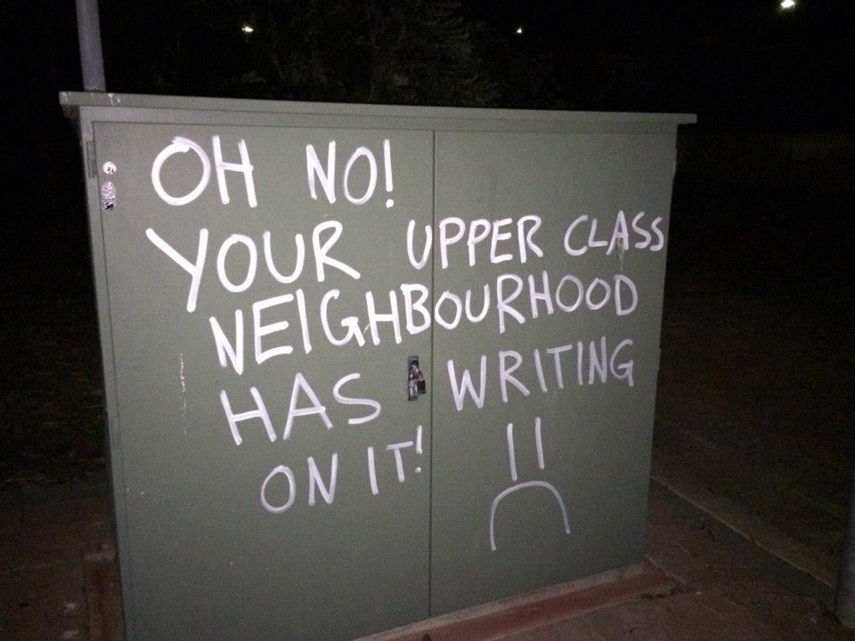
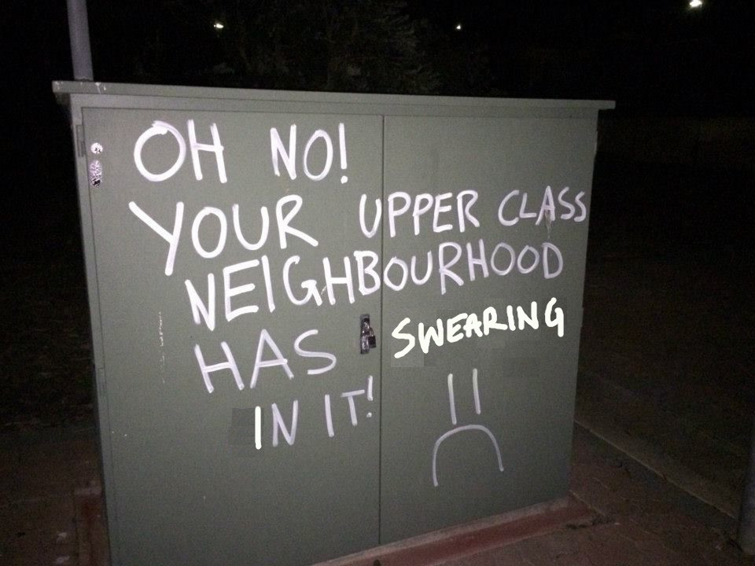
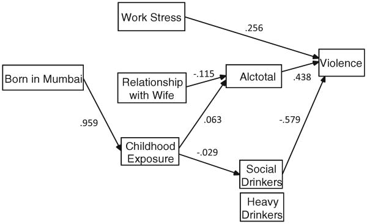
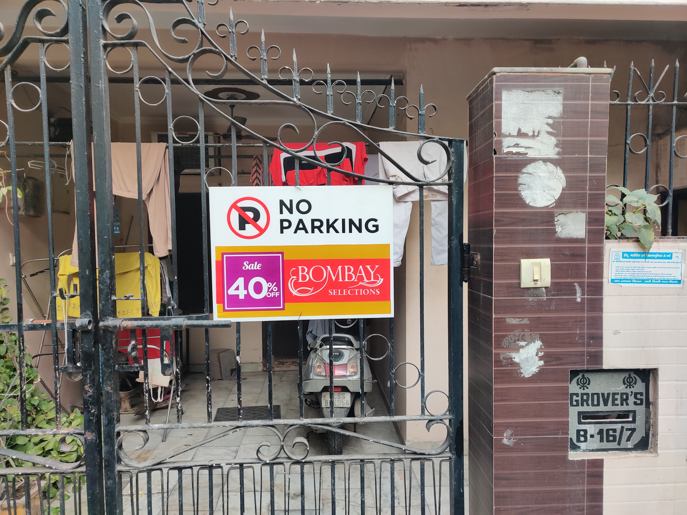

GAALI KAISE DI HARAMKHOR!  I grabbed a copy of "strengthen your heart" with the intent to read it at a park nearby. As soon as I went outside I heard someone complain with great indignance "Chaar baje tak jaage hue the hum!". The person making this complaint was easy to spot - the source of a high pitch wearing a pink body hugging jacket and an unusual amount of makeup for a sunday morning speaking to an older relatively respected (read bourgeois) resident of the neighborhood. She's complaining about the local neighborhood sweeper - Ram Lal who sleeps in the back alley between two blocks of buildings. More precisely, he sleeps huddled between a car, some pots of plants, above a mattress resting on the concrete sidewalk and below the airconditioning vents in a corner between two buildings. Ramlal has committed a crime that's inexcusable according to her and her husband who comes out in a few minutes to yell all sorts of insults at him. Her husband has a moustache that one is likely to find in the 80s and is wearing a blue vest (banyan) and blue jeans - the clothes in which he slept in his second floor apartment unit with all sorts of middle class comforts and assurances of imminent upward mobility. This unnamed neighbor who I hadn't seen until then threatens to burn Ramlal's mattress, quilt and clothes if he is found sleeping in that alley again. What could he have possibly done to merit such punishment? And more importantly, why is Ramlal listening to all these insults and threats with a sheepish grin on his face? I'm perplexed but I think I have some clue to piece together a temporary understanding. Ramlal is an excellent worker, according to my father and other neighbors who hold the implicit social status that allows them to confer this judgment. Ramlal is deferential, polite, doesn't speak out of his place or threaten to violate any property lines in any sense of the word - everthing people in my ramesh nagar neighborhood would want from someone they employ to maintain the streets in a condition that can allow them to continue signalling their impeccable properties in the right environmental context. He's generally sociable. Except at night. When he drinks. And in his drunk stupor, he swears out loud. At nobody. Until he falls asleep. He's loud enough to be heard by people living close by. "Why do you do this?", my father had once asked him. "You're a good fellow, your work is great, we're all content with having you around, so what compels you to drink so much and yell these lowbrow swears at night?" "Pata nahi, saab. Bas ho jaata hai" - Ramlal apparently at a loss in explaining his own behavior when drunk. It's unclear whether he has an explanation to give to us upper middle class residents or if he has an explanation at all. I suspect he has an understanding, just one that won't translate well to the sensibilities of the people who live here. My neighbors are furious with RamLal for drinking and yelling lowbrow swears at nobody late at night. This is a crime bad enough that according to them merits his expulsion from the last vestiges of finding a home in an urban space - between disparate industrial elements of a street that he himself maintains. Well, expulsion might be more humane a characterization of what the complaining woman and her husband threaten to do. They're swearing at him during the day for swearing at nobody at night - with no sense of irony about this. My neighbors probably don't feel this much consternation when they're using public areas to hold their kirtans, parties, wedding functions during the pandemic as they blare punjabi party classics from loudspeakers for the fifty millionth time. I ask my father - "what about this offends them all?" "It's not nice, there are people sleeping, children studying" THINK OF THE CHILDREN! They might just learn the uncomfortable realities concealed behind the facetious daylight posturing that sustains their relationship to a local public worker - someone who is highly imbricated in their lives yet ought to remain invisible in any form that might carry even a hint of discontent threatening the illusion concealing a hierarchy of comforts and joys. THINK OF THE CHILDREN! They might just learn to cuss a few years earlier than they would. the entitled petulant little assholes might find another word to add to their arsenal of crassness to torment their parents who are trying very desperately to ensure their children grow up to speak a language of class that will finally carry them above and beyond to more bourgeois neighborhoods. THINK OF THE CHILDREN! They might, just might, venture out at night and ask RamLal what's bothering him. They might learn from their conversation that the colossal effort they're putting in at school directed at ultimately landing a 20LP+ job requires them to accept some unconscionable priors. They might think beyond their designated functions in their nuclear family. THINK OF THE CHILDREN! They ought to be taught to conduct themselves obediently, politely and in ways concomitant to their own preservation while harboring a feckless disregard to anyone beyond the array of people who will signal a similar or higher class status to them.  What a bizarre little case of inter class contact. It's not particularly hard to imagine why someone might want to drink and if the worst that comes out of it is some offence to an upper class moral sensibility then perhaps I ought to indulge it a bit too. Insensitive graffiti and demeaning language might devalue the general social currency that this polite worker by day and diogenes by night seems to already be doing. But to be diogenes requires one to uproot oneself from existing social relationships. My acts of bad temper would probably come across as more of a shock to my neighbors who can't threaten to burn down my residence as flippantly as they do with RamLal. But it'd have implications for my parents who live here and are deeply concerned with their relationships in the area. This thread that runs down the pyramid from the older bourgeois neighbor at the top, to my parents, to me and finally to RamLal can stretch only so far. The locus of its movement is determined by a highly fungible ideological belief in the attainment of ever increasing image of prosperity embodied by my richer neighbors who deem it suitable to spend 30Lakhs on an Audi sedan to park in the tiny street outside their building and then employ a security guard to watch over it. "It's stupid - to purchase this pointlessly expensive and large vehicle in a city as cramped and congested as Delhi - and particularly stupid to expend further money each month to have it secured" "What else does one spend their money on?" - my parents enquire. One has more money than they know what to do with. People in this neighborhood discuss politely the next upscale shops to buy their furniture and cars from. Because what else is there to do with money if not use it for conspicuous consumption of luxury goods? And then get offended with the confrontation of some basic facts of inequality. How preposterous would it be to attempt a redistribution of wealth that doesn't leave RamLal drinking every night till he falls asleep on the pavement on one hand, and others unsure of what brand of sedan to buy from whatever images of status they've consumed? Does that require a different economic rearrangement? A different moral one? A material shift in economic relationships? An ideological shift in moral consciousness? If we're not at the end of history then maybe the social forces that determine these vast inequalities and social contradictions will conflict, and ultimately resolve into something that's more sustainable. An equilibrium that doesn't behoove my understanding as much. How about you? Would you forego an expenditure for your comfort in order to permit another in your community to live more comfortably? Someone who isn't typically part of the circle of friends/family you envision as being directly responsible for? Moreover, would you find it acceptable if this tradeoff is voted on and then mandated in your house, district, city, state? The grey Unfortunately there are implications to such alcohol consumption that go beyond offending petty bourgeois sensibilities. Alcohol consumption and domestic violence often go hand in hand, in Mumbai, Delhi and probably in other major urban cities too. It's unclear to me whether the same has been statistically studied for rural areas but I would expect this effect to be less pronounced in regions where the stresses of surviving are different from that found in the impoverishment of cities. But that's just a theory.  Ramlal is married. He doesn't live with his children who're around my age, and his wife who is around his age. Nobody quite knows why. My parents conjecture that his alcoholism might have led to his expulsion from his home. It's a flippant charge to casually levy without much knowledge but also not an entirely implausible one. At this point, I arrive at my own threshold for social normativity where my appreciation for social non-normativity stops. My yearning for the dissolution of the nuclear family isn't compatible with individual acts of violence between a pair of people. Perhaps my case for the dissolution of the nuclear family is bolstered -its evident inadequacy in absorbing the shocks of life. But that's a subject for discussion for another time. Addendum; Ramlal smiles at them, apologizes and says he won't do it again. He looks at me. I smile back, acknowledging his awkward situation, the best i think i can do under the current circumstances and resume my walk. My neighbors eventually calm down and go back into their homes which have advertisements by uber and bombay dyeing hung up on their gates because it allows them to declare the public space outside their houses as unavailable for anyone else's parking spot. PS: Zoom out to see the background image of the alleyway. 